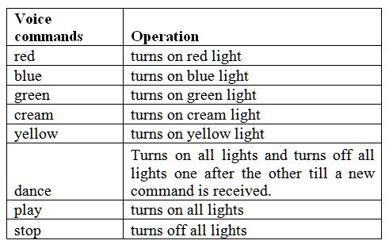
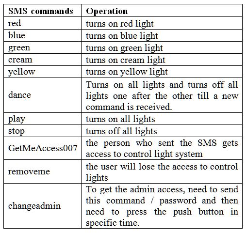

In order to control the lights by our voice, we first need to enable the voice recognition sensor in 1shield Application in our mobile. Then tap on the speaker and by speaking which ever colour light we want or its specific name then that particular light gets on. In this project, there are 5 lights: red, blue, green, yellow and cream. There is also one more option “dance” so when this command is used, the light on and off in specific time interval until next command is given.
The list of commands and their operations:
The light sensor in the 1shield app should be on. Then the sensor detects the light intensity and depending on it if the room is dark, the lights get on automatically and when it’s bright then the lights turn off automatically.
We can also control the lights by sending the SMS to the mobile which is connected to the 1shield.
Whenever the status of the lights are changed we get an SMS notification to the mobile through the lights are controlled.
By sending the password as message to the sensor, the user can get access to the system to control the lights.
If the user doesn’t want access, just by sending another password, he can get out of the users list. So he can’t access the light system anymore.
Whoever the user is, there will be one admin. We can change the admin but can never remove the admin. So in order for a client to become admin, he first needs to send a password. Then within 10 sec he needs to press the switch in the connection to get access. This system is implemented to make sure the person is having access to the home and not just a stranger gets access just by sending the password.
List of Commands that can be sent by SMS and their operations:
